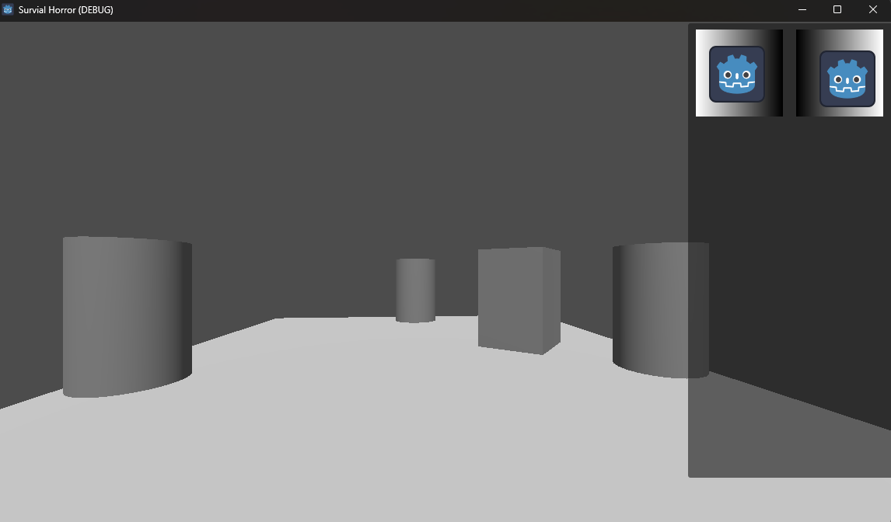

Simple games
We all have to start somewhere, and how I started with game development and trying to learn the engine is by making small and simple games.
First example is a game I just call adding game

The goal of this game is to add numbers using your number keys to match the number on the right in exactly 10 moves. The game was inspired a puzzle in Resident Evil 0,
which shared the same concept.
Here is a link to a youtube demonstration: Link
After that I decided to make another simple game I like to call 'Catch Em'
In this game you have 3 lives, and you need to catch falling objects before they go past you and hit the bottom.
Here is a link to a youtube demonstration: Link
Prototypes
After a while of not developing, I wanted a reason to motivate me. That is when I decided to actually delve into my favorite genre survival horror,
despite insisting I never would. However, doing so actually motivated me a lot and what resulted is a prototype of if I was making a game similar to
classic Resident Evil.
I only have one example to show as of now.

If the very blocky look didn't give it away, this was just meant to be a prototype to help me learn what I can do and how to use the engine. There are two prototypes I
made like this, however, they are the same, one is just programmed way better but both resulted in me becoming a more competent game developer.
In this prototype we have fixed camera angles

Even limited inventory and inventory stacking

There is other things like item interactions and tank controls, but the best way to show everything I did in this prototype is through a youtube video:
Link
Another prototype is not here because it is just the first stage of my actual first project, Blackout.
Click here for more info: Blackout